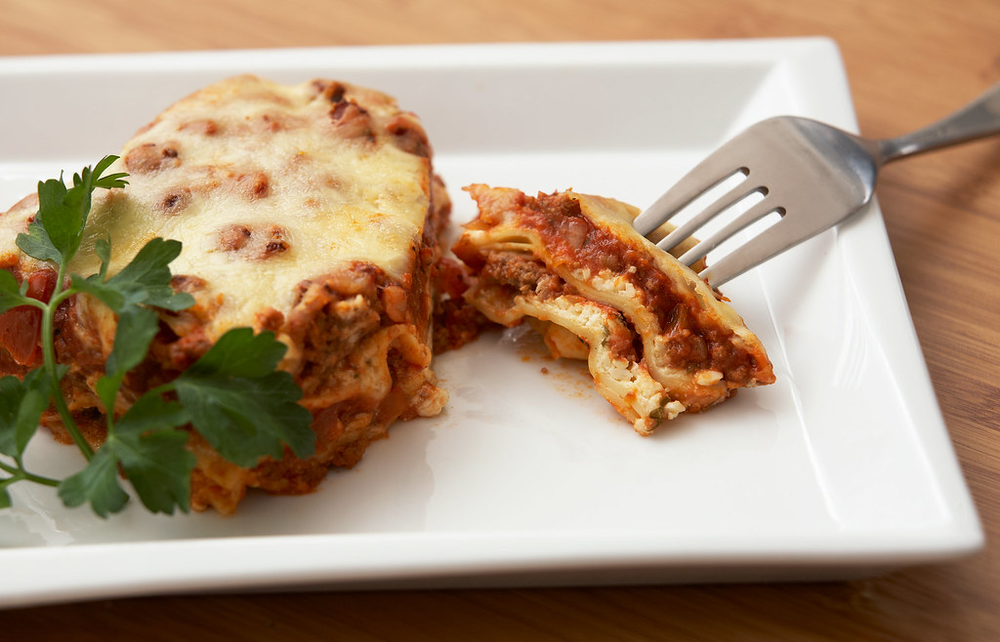

Lasagna

Description
Lasagna is a classic Italian type of pasta, made with flat sheets, tomato sauce, meat, vegetables and cheese.
Ingredients
- Meat
- Onion
- Canned tomatoes
- Fresh herbs
- Sugar
- Spices and seasonings
- Noodles
- Cheese
- Eggs
Steps
- Cook the meat: Cook the ground meat in a skillet until browned and crumbly. Add the onion and continue cooking until it's translucent. Stir in the canned tomato products, half of the parsley, garlic, basil, 1.5 teaspoons of salt, oregano, and sugar.
- Cook the noodles: Boil the lasagna noodles in lightly salted water until they're al dente.
- Make the cheese layer: Mix cottage cheese, Parmesan cheese, eggs, the remaining parsley, the remaining salt, and pepper in a bowl.
- Assemble the lasagna: Layer the ingredients according to the recipe (starting with sauce and ending with mozzarella) until the lasagna is assembled.
- Bake the lasagna: Cover with foil and bake in the preheated oven for about half an hour. Remove the foil and continue baking until the top is golden brown.
Back to top
Back to main menu